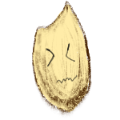

| 白米的主要成分為澱粉，即醣類，佔75%，也含有膳食纖維、維生素B群、維生素E、鈣、磷、鉀等營養素。由於白米的精緻程度高，營養成分損失較多，因此比起其他米食，營養價值相對少了一些，所以有許多營養師建議白米可以搭配糙米一起食用。 | 生白米熱量每100克為354大卡；煮熟的白米飯每100公克為158卡，大約是半碗飯的份量。 | |
| 糙米由92%胚乳組成，再加上5%表皮以及3%胚芽。主要營養成分集中在米糠的表皮和胚芽上，因此膳食纖維、維生素B群、維生素E、及其他微量營養素都遠比白米多了許多倍。 | 糙米每100克約為340大卡。 | |
|  | 主要出產於花蓮的紫米，若以品種來做區分為糯米的一種，而以精緻程度來做區別則屬於糙米，因此有些包裝標示為黑糯糙米，其實就是紫米。紫米富含膳食纖維和微量元素，包含鐵、鈣、鋅、硒、鉀、磷還有維生素B群。 | 紫米含有人體所需的四種胺基酸，蛋白質含量也比一般白米來得高，且富含膳食纖維。 |